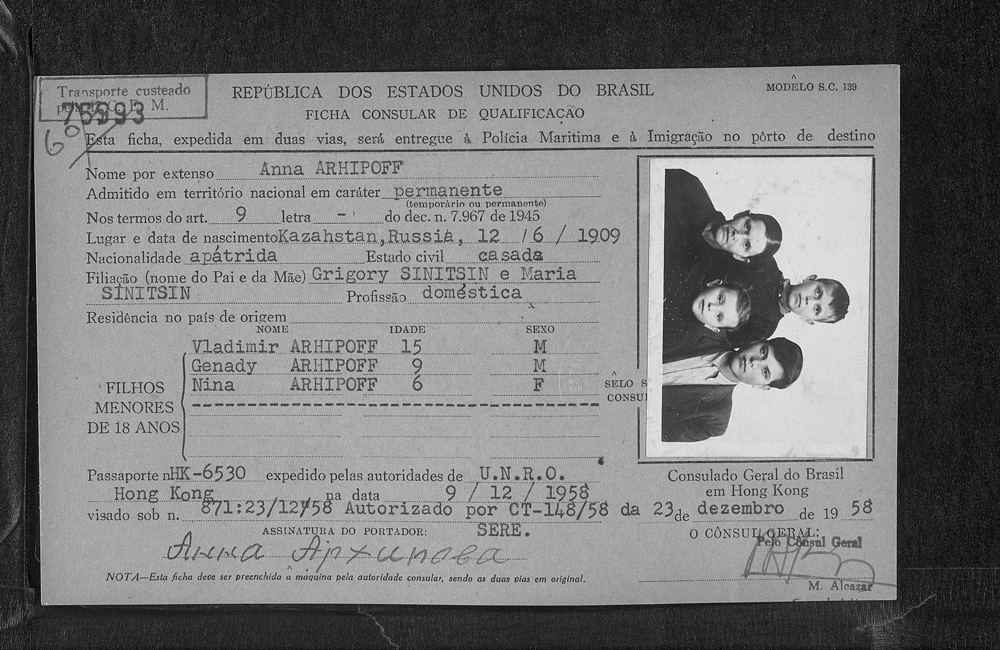
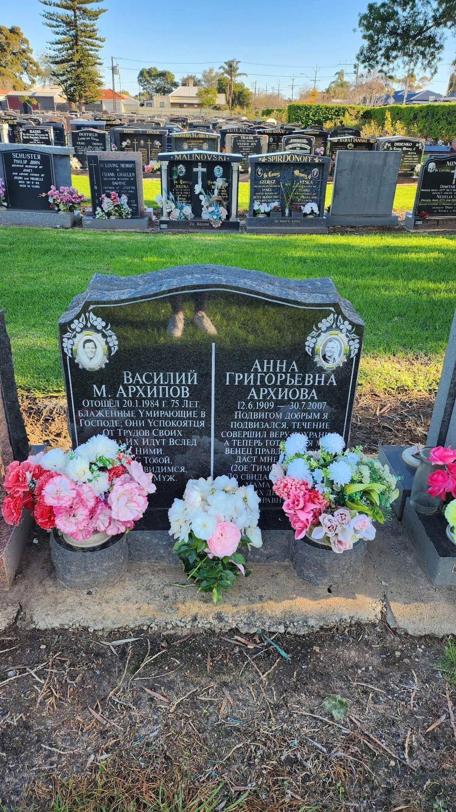
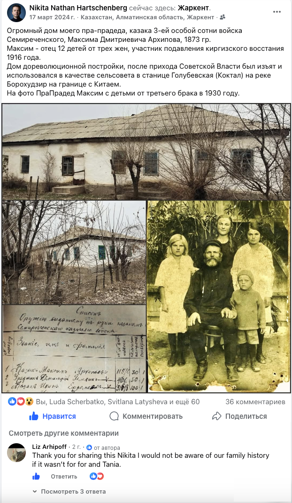

DNA-Spurensuche
РешеноАрхипов / Arhipoff
Часть семьи бежала от коллективизации из Семиречья в Китай, и пропала из виду на сто лет. ДНК-тест правнучки переселенца сам нашёл дорогу назад.
{kind=link}

Консульская карточка Анны Архиповой, Бразилия, 1958 год, этап пути семьи через Бразилию.
{kind=link}

Могила Василия и Анны Архиповых на кладбище в Аделаиде, Австралия.
{kind=link}

Торт на 90-летие сына переселенца, Аделаида, декабрь 2025, на глазури отмечен маршрут семьи.
{kind=link}

Публикация автора о пра-прадеде Максиме Дмитриевиче Архипове, станица Голубевская (Коктал).
- Исходные данные до начала поисков
- Часть семьи по линии Архиповых бежала от коллективизации из Туркестана (Семиречье) в Китай около 100 лет назад, в конце 1920-х – 1930-е годы. Дальнейшая судьба этой ветви была полностью неизвестна, связь прервалась на несколько поколений.
- Метод поиска
- Пассивное автосомное ДНК-тестирование: без многолетнего целевого поиска. Находка произошла органично: правнучка переселенца самостоятельно сделала тест на MyHeritage из собственного интереса, и система показала совпадение с тестом автора. Редкая для Австралии фамилия (Arhipoff/Archipoff) сразу же указала на возможную связь.
- Тип ДНК-тестов
- Автосомный ДНК-тест MyHeritage (с обеих сторон).
- Время до результата
- Находка датируется началом 2026 года. Сам тест совпаденки был, по-видимому, сделан незадолго до этого, точное время начала не установлено, поскольку инициатива исходила от самой родственницы, а не от целевого поиска автора.
- Количество тестов
- Один прямой тест совпаденца (правнучки переселенца) сопоставлен с собственным тестом автора: точечное органичное совпадение, а не серия целевых тестов.
- Результат
Найдены живые потомки эмигрировавшей ветви. Маршрут семьи после бегства: Туркестан → Китай → (после прихода компартии к власти, новый переезд) → Бразилия → через Италию и Индию → Австралия, Аделаида.
Установлена тёплая переписка с родственниками. Сохранились фотографии: могила двоюродного прадеда в Бразилии, миграционная карточка и празднование 80-летия его сына в Аделаиде в декабре 2025 года.
Планируется личная встреча: идёт сбор средств на перелёт.
Источник: собственные сообщения автора в тематических группах Familio по генеалогии и ДНК, 2022–2026.